Window up: 115 ms
From launch to a window on screen: the median of nine warm launches, release build, Apple M2 Pro on Linux. The launch record
A fast, native Git client for macOS and Linux, free and open source.
Open your history. Get to the changes. Keep moving.
macOSLinuxFree and open source
 View full size
View full size
BUILT FOR BIGGER PROJECTS
GitTurtle started with Fernando’s own projects: 60 GB across many worktrees. Waiting for repositories to load and commits to open kept breaking his flow. He built GitTurtle to make those everyday moments feel quick again.
From launch to a window on screen: the median of nine warm launches, release build, Apple M2 Pro on Linux. The launch record
From selecting a commit to its changed-file list: the median in traces from the app on a 653-commit test repository, release build, Apple M4 Max. The workflow record
From opening a text file in history to its diff: the median in the same traces, release build, Apple M4 Max. The workflow record
Each further page of 500 commits in a 120,000-commit history loaded in a median of 0.5 ms: a backend benchmark, release build, the same M4 Max. The paging record
Scrolling a 3,000-commit history took a median of 8.2 ms of UI-thread time per wheel notch: a 1480 × 800 window, release build, Apple M2 Pro on Linux. The scrolling record
A CLOSER LOOK
Six views of the native app.
Choose one to explore.
View full size
Read a commit graph with branch and tag labels beside each commit’s message and changed files. Search local history, narrow it to a branch, and page through long histories.
View full size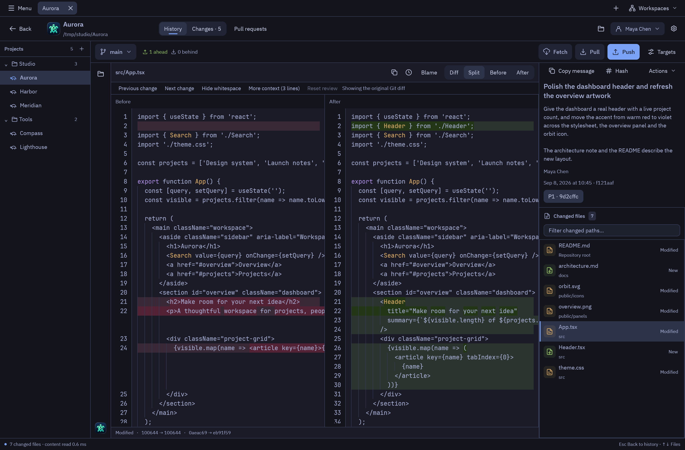
View full sizeRead unified or split diffs with syntax coloring and changes marked within the line, and move from change to change. Compare any two revisions, a merge base or a merge’s parents.
View full size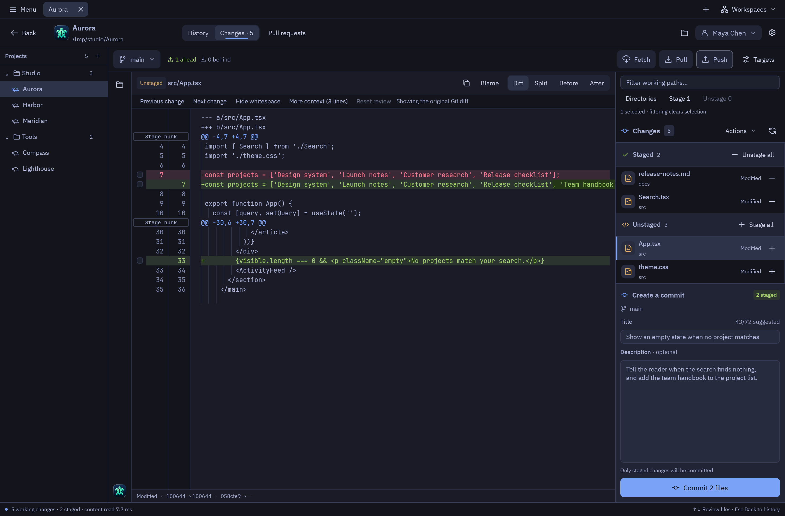
View full sizeStage whole files, single hunks or individual changed lines, with staged and unstaged work in separate lists. Every worktree keeps its own commit draft, so a half-written message is still there when you come back.
View full size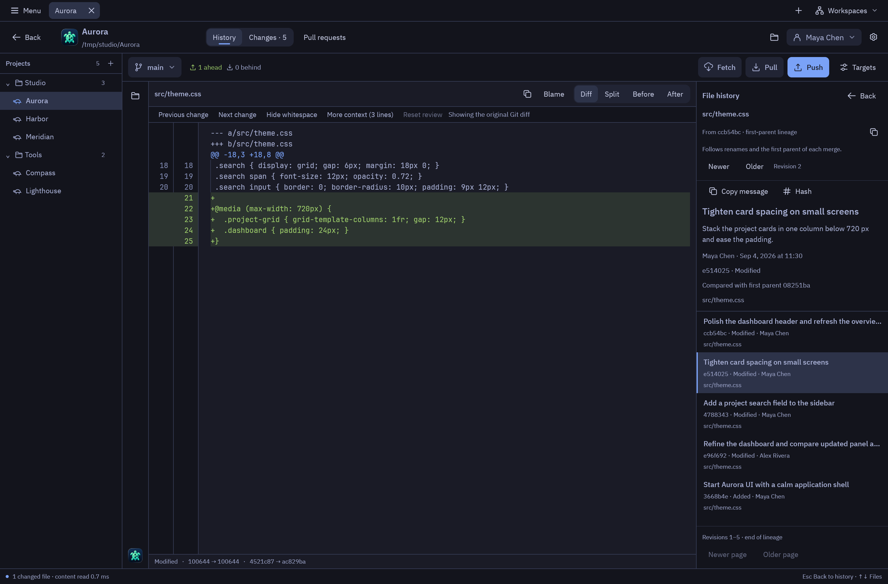
View full sizeFollow one file through its renames, see who last changed each line of a committed or working file, and step into the history of a single line.
View full size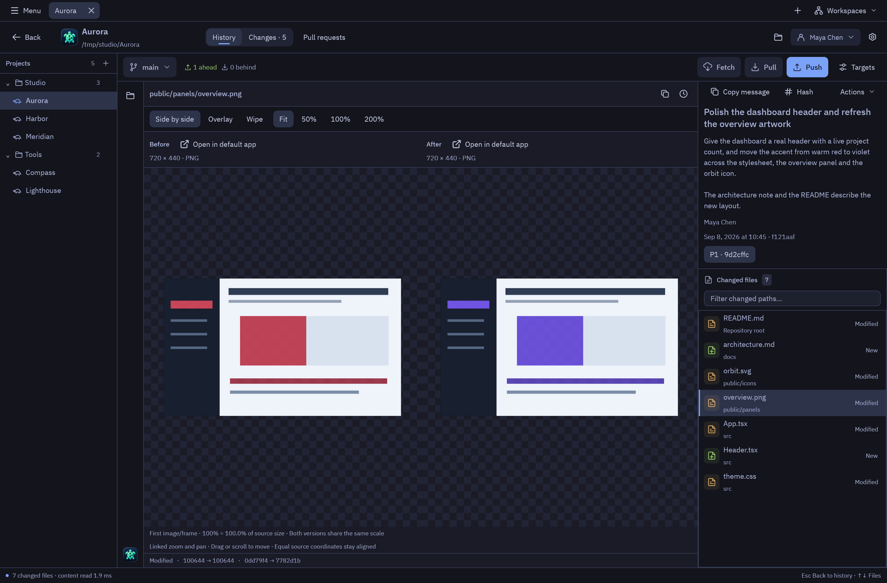
View full sizeCompare images side by side, as an overlay or with a draggable wipe, with linked zoom and pan. Markdown with Mermaid diagrams, PDF pages and 3D models get previews too, each with its before and after.
View full size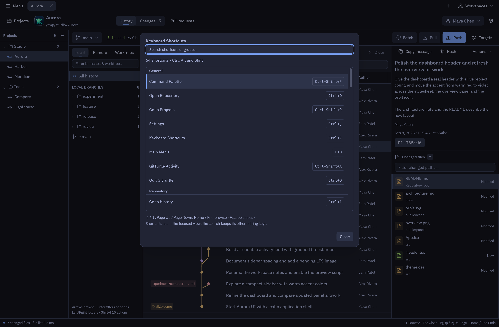
View full sizeThe command palette searches every command, and one that cannot run right now stays listed and says why. Quick Open finds any tracked file, and a searchable Keyboard Shortcuts view lists the bindings for your platform.
View full sizeALSO IN THE BOX
Connect a GitHub.com account through the GitHub CLI to browse pull requests, review changed files, comment on lines and submit a review, with drafts that survive a restart. It is early: see what’s next.
Branch, merge, rebase, cherry-pick, revert, stash and tag through named actions, including a native interactive rebase for linear history. Fetch, pull and push start when you ask.
Resolve conflicts block by block, undo an eligible last commit, and browse the reflog to create a recovery branch without disturbing your current work.
Every picture shows a disposable demo repository, captured natively on Linux. How the pictures were taken
MAKE IT YOURS
Choose from twenty built-in light and dark themes, from GitTurtle’s own Midnight and Braden to Tokyo Night, Nord, Dracula and Solarized, or follow the system’s appearance. Set interface and code text sizes separately, and pick comfortable or compact density.
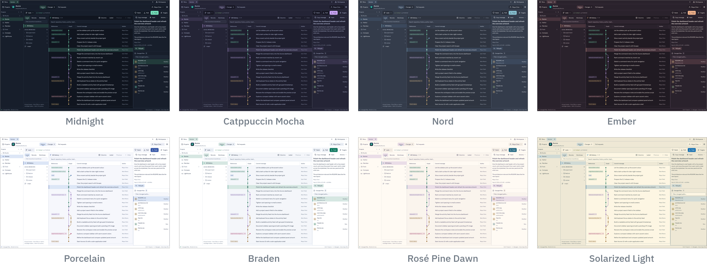
View full size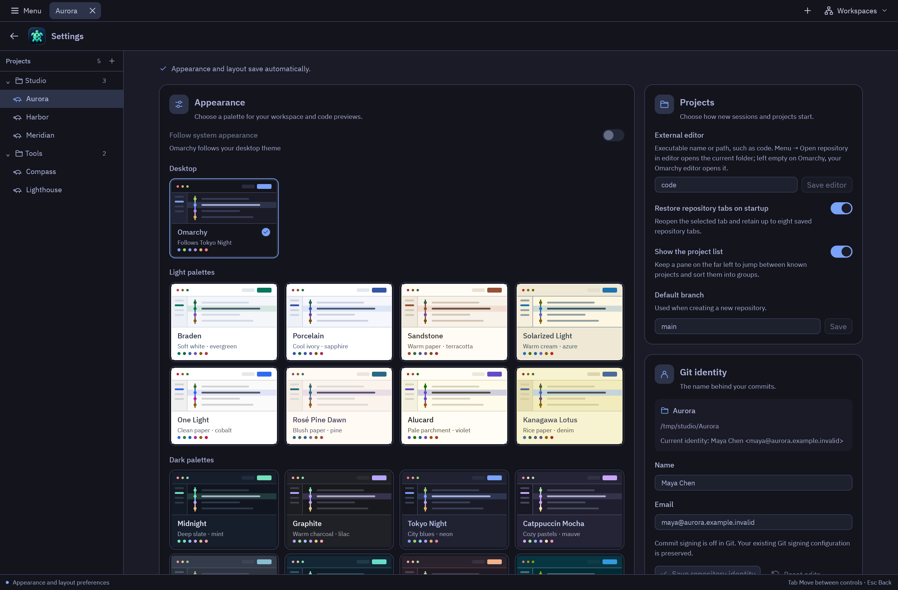
View full sizeEvery theme is a card in Settings, and a click applies it to the open window.
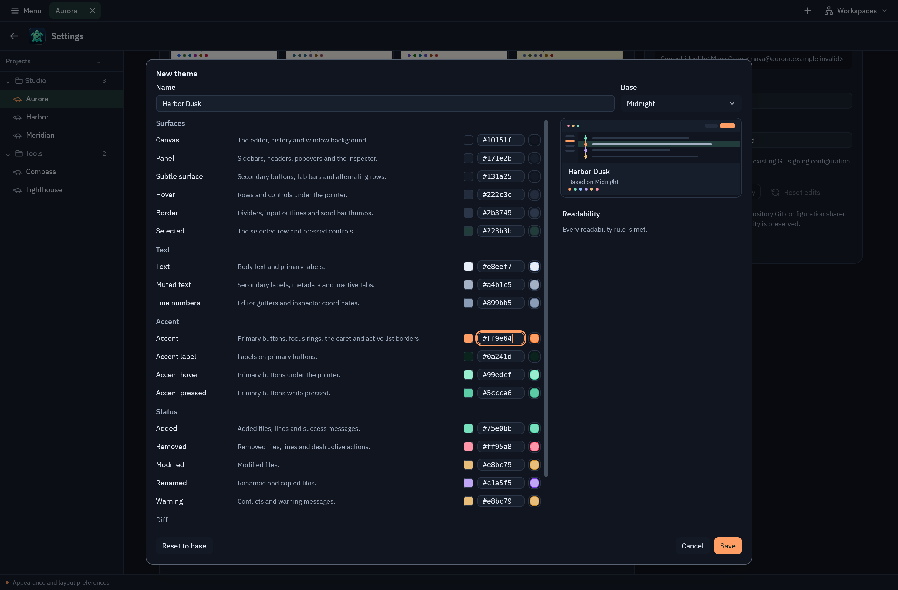
View full sizeDesign up to 32 themes in an editor with a live preview, and share them as files.
FIRST-CLASS OMARCHY SUPPORT
On an Omarchy desktop, GitTurtle follows your setup from the first launch. It needs no Omarchy patch or theme template: it reads your current theme’s colors itself, hand-written and installed themes included, and never writes them. Since version 4.5, Omarchy supports Apple Silicon MacBooks natively, and GitTurtle’s Linux work is done and checked on one: an M2 Pro MacBook Pro running Omarchy 4.5.
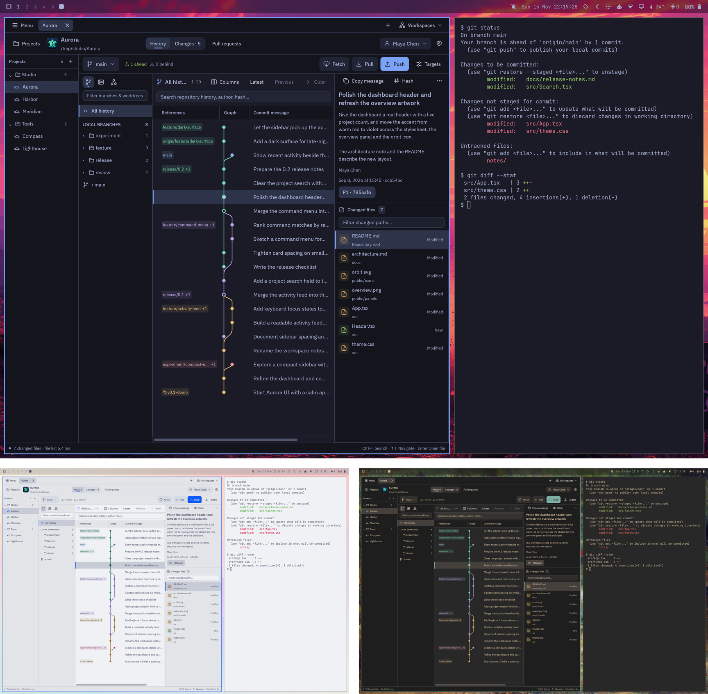
View full sizeA first launch selects the Omarchy theme, which takes its colors from your current Omarchy theme. omarchy theme set retints the open window, with colors adjusted where needed so text and diffs stay readable.
Code uses your Omarchy monospace font, and omarchy font set changes it in the open window. Theme and font can each be changed in Settings.
Omarchy’s Super+C, Super+V, Super+X and Super+A work in GitTurtle’s text, and Super+C also copies a selected commit’s hash or a file’s path. With no editor chosen in Settings, Open repository in editor opens your Omarchy editor, and Open repository in terminal opens your default terminal.
A native Wayland client that works tiled or floating and keeps Omarchy’s default window opacity. Hyprland draws no title bar, so quit with Ctrl+Q or close the window with your compositor binding.
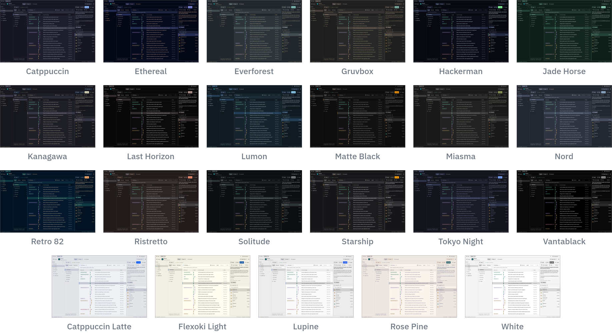
View full sizeEighteen dark: Catppuccin, Ethereal, Everforest, Gruvbox, Hackerman, Jade Horse, Kanagawa, Last Horizon, Lumon, Matte Black, Miasma, Nord, Retro 82, Ristretto, Solitude, Starship, Tokyo Night and Vantablack. Five light: Catppuccin Latte, Flexoki Light, Lupine, Rose Pine and White. Each was set from the desktop, and the app was not touched between themes.
View full sizeReach every command from the palette and any tracked file from Quick Open. macOS gets a native menu bar; Linux gets a Menu at the top left of the window, one press of F10 away.
Save named Git profiles with their author and signing settings, and apply one to a repository after reviewing exactly what it will change.
Keep up to eight repository and worktree tabs open, and save them as named workspaces. Create and remove linked worktrees through a review.
Browsing stays local and read-only and never fetches. Writes and network requests start only when you ask, and Git keeps your hooks, signing and credential helpers.
Built with Rust and GPUI, GitTurtle draws its own native window: no Electron, no web view and no AI features. Repository reads, diffs, parsing and image decoding run off the UI thread, and it works with the Git you already have installed.
COME TAKE A LOOK
GitTurtle is in early development, and you can build it from source today. Try it, tell us what feels good, and help shape what comes next.
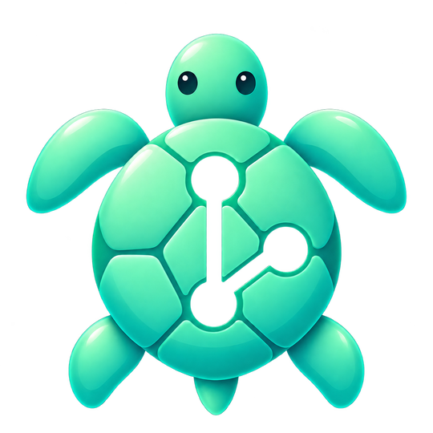
SMALL TURTLE. SHARED JOURNEY.
Free to use, inspect, and improve. GitTurtle is open source under the MIT license. Bring an idea, report a bug, or help shape what comes next.